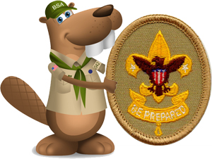

First Class Rank

All requirements for the First Class rank must be completed as a member of a troop or as a Lone Scout.
The requirements for Scout, Tenderfoot, Second Class, and First Class ranks may be worked on simultaneously; however, these ranks must be earned in sequence.
Alternate requirements for the First Class rank are available for Scouts with physical or mental disabilities if they meet the criteria listed in the Scouts BSA Requirements book.
First Class Rank Requirements
1.
Do the following:
1a. Since joining Scouts BSA, participate in 10 separate troop/patrol activities, at least six of which must be held outdoors. Of the outdoor activities, at least three must include overnight camping. These activities do not include troop or patrol meetings. On campouts, spend the night in a tent that you pitch or other structure that you help erect, such as a lean-to, snow cave, or tepee.
1b. Explain each of the principles of Tread Lightly! and tell how you practiced them on a campout or outing. This outing must be different from the ones used for Tenderfoot requirement 1c and Second Class requirement 1b.
2.
Do the following:
2a. Help plan a menu for one of the above campouts that includes at least one breakfast, one lunch, and one dinner, and that requires cooking at least two of the meals. Tell how the menu includes the foods from MyPlate or the current USDA nutritional model and how it meets nutritional needs for the planned activity or campout.
2b. Using the menu planned in First Class requirement 2a, make a list showing a budget and the food amounts needed to feed three or more youth. Secure the ingredients.
2c. Show which pans, utensils, and other gear will be needed to cook and serve these meals.
2d. Demonstrate the procedures to follow in the safe handling and storage of fresh meats, dairy products, eggs, vegetables, and other perishable food products. Show how to properly dispose of camp garbage, cans, plastic containers, and other rubbish.
2e. On one campout, serve as cook. Supervise your assistant(s) in using a stove or building a cooking fire. Prepare the breakfast, lunch, and dinner planned in First Class requirement 2a. Supervise the cleanup.
3.
Do the following:
3a. Discuss when you should and should not use lashings.
3b. Demonstrate tying the timber hitch and clove hitch.
3c. Demonstrate tying the square, shear, and diagonal lashings by joining two or more poles or staves together.
3d. Use lashings to make a useful camp gadget or structure.
4.
Do the following:
4a. Using a map and compass, complete an orienteering course that covers at least one mile and requires measuring the height and/or width of designated items (tree, tower, canyon, ditch, etc.)
4b. Demonstrate how to use a handheld GPS unit, GPS app on a smartphone, or other electronic navigation system. Use GPS to find your current location, a destination of your choice, and the route you will take to get there. Follow that route to arrive at your destination.
5.
Do the following:
5a. Identify or show evidence of at least 10 kinds of native plants found in your local area or campsite location. You may show evidence by identifying fallen leaves or fallen fruit that you find in the field, or as part of a collection you have made, or by photographs you have taken.
5b. Identify two ways to obtain a weather forecast for an upcoming activity. Explain why weather forecasts are important when planning for an event.
5c. Describe at least three natural indicators of impending hazardous weather, the potential dangerous events that might result from such weather conditions, and the appropriate actions to take.
5d. Describe extreme weather conditions you might encounter in the outdoors in your local geographic area. Discuss how you would determine ahead of time the potential risk of these types of weather dangers, alternative planning considerations to avoid such risks, and how you would prepare for and respond to those weather conditions.
6.
Do the following:
Under certain exceptional conditions, where the climate keeps the outdoor water temperature below safe levels yearround, or where there are no suitably safe and accessible places (outdoors or indoors) within a reasonable traveling distance to swim at any time during the year, the council Scout executive and advancement committee may, on an individual Scout basis, authorize an alternative for requirements 6a and 6e. The local council may establish appropriate procedures for submitting and processing these types of requests. All the other requirements, none of which necessitate entry in the water or entry in a watercraft on the water, must be completed as written.
6a. Successfully complete the BSA swimmer test. See the Swimming merit badge requirements for details about the BSA swimmer test.
6b. Tell what precautions must be taken for a safe trip afloat.
6c. Identify the basic parts of a canoe, kayak, or other boat. Identify the parts of a paddle or an oar.
6d. Describe proper body positioning in a watercraft, depending on the type and size of the vessel. Explain the importance of proper body position in the boat.
6e. With a helper and a practice victim, show a line rescue both as tender and as rescuer. (The practice victim should be approximately 30 feet from shore in deep water).
7.
Do the following:
7a. Demonstrate bandages for a sprained ankle and for injuries on the head, the upper arm, and the collarbone.
7b. By yourself and with a partner, show how to:
• Transport a person from a smoke-filled room
• Transport for at least 25 yards a person with a sprained ankle
7c. Tell the five most common signals of a heart attack. Explain the steps (procedures) in cardiopulmonary resuscitation (CPR).
7d. Tell what utility services exist in your home or meeting place. Describe potential hazards associated with these utilities and tell how to respond in emergency situations.
7e. Develop an emergency action plan for your home that includes what to do in case of fire, storm, power outage, and water outage.
7f. Explain how to obtain potable water in an emergency.
8.
Do the following:
8a. After completing Second Class requirement 7a, be physically active at least 30 minutes each day for five days a week for four weeks. Keep track of your activities.
8b. Share your challenges and successes in completing First Class requirement 8a. Set a goal for continuing to include physical activity as part of your daily life.
9.
Do the following:
9a. Visit and discuss with a selected individual approved by your leader (for example, an elected official, judge, attorney, civil servant, principal, or teacher) the constitutional rights and obligations of a U.S. citizen.
9b. Investigate an environmental issue affecting your community. Share what you learned about that issue with your patrol or troop. Tell what, if anything, could be done by you or your community to address the concern.
9c. On a Scouting or family outing, take note of the trash and garbage you produce. Before your next similar outing, decide how you can reduce, recycle, or repurpose what you take on that outing, and then put those plans into action. Compare your results.
9d. Participate in three hours of service through one or more service projects approved by your Scoutmaster. The project(s) must not be the same service project(s) used for Tenderfoot requirement 7b and Second Class requirement 8e. Explain how your service to others relates to the Scout Law.
10.
Tell someone who is eligible to join Scouts BSA, or an inactive Scout, about your Scouting activities. Invite this person to an outing, activity, service project, or meeting. Provide information on how to join, or encourage the inactive Scout to become active. Share your efforts with your Scoutmaster or other adult leader.
11.
Demonstrate Scout spirit by living the Scout Oath and Scout Law. Tell how you have done your duty to God and how you have lived four different points of the Scout Law (different from those points used for previous ranks) in your everyday life.
12.
While working toward the First Class rank, and after completing Second Class requirement 11, participate in a Scoutmaster conference.
13.
Successfully complete your board of review for the First Class rank.